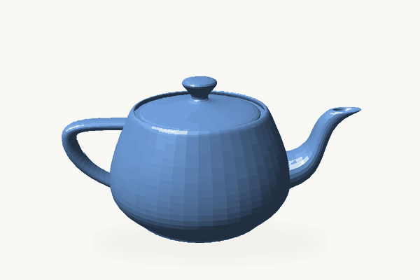
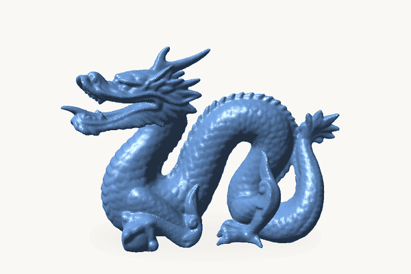

Radiation Principles & Modeling, Explained with a Teapot and a Dragon
I spend most of my academic carrer on Radiationn, its concept, the modeling of it, and the numerical implementation of it! How I get into it, probably another story. Radiation is probably one of my favourite subjects in physics. It seems so easy to understand, yet it is very complex. It has the scariest equations, and people keep finding easy ways (if you understand them) to implement it.
The poruse of this article is not go deep, text-book style into the Radiation modeling, just the fun parts. My hope is that once you know this, you get as excited as I get when seeing its magic in games, in animation, and now in AI. Also, it can be your next topic for a dinner-table conversation!
Radiation Principles
Radiation is a ray (or a wave) of energy. When it interacts with matter, three things can happen:
- Absorbed — a very black surface absorbs all the light.
- Reflected — a mirror reflects all the light.
- Transmitted — a glass window transmits most of the light.
Fig. 1 — interactive diagram of what happens when light meets matter: open it directly.
In all of the examples above, all three things are happening at the same time — but one of them is dominant. Energy is conserved, so the three fractions add up:
One thing that is important — and confusing — is the difference between reflection and emission. Reflection is when a ray of light hits a surface and bounces back: the light you see is the light that arrived. Emission is when matter produces light of its own.
What is emission? When matter gets “excited” (by heat, by absorbing light, by an electric current, and so on), it emits its own light signature. A glowing stove element, the sun, a candle flame, an LED — they are not bouncing anybody else's light back at you; they are the source.
Colour is where people mix the two up. An apple looks red or green not because it emits red or green light, but because its skin absorbs the other colours and reflects those back — that is still reflection, just the diffuse kind, scattered in every direction rather than in one clean bounce. Look at a very clean, polished car and you can see both kinds of reflection at once: you see the objects around it reflected “as is” (specular, mirror-like), and you see the paint's own colour (diffuse). What the car — and the apple, and you — genuinely emit is in the infrared: every object above absolute zero glows at a wavelength set by its temperature. That thermal emission is exactly what radiation modelling in a boiler or a furnace is about; the visible colour is just the part our eyes happen to catch.
It is time to introduce you to my favourite test model for radiation modelling, the Utah teapot:

Why a teapot? Because it is the perfect awkward object. It is round, so light grazes it at every angle and you get soft shading gradients. It is concave in places — under the spout, inside the handle, where the lid meets the body — so parts of the teapot cast shadows and reflect light onto other parts of the teapot. Any method that only handles direct light from the source will get those inter-reflections wrong, and you can see it immediately. It also has a shiny surface with a spout to give specular highlights, a saddle-shaped handle for tricky normals, and it was, conveniently, sitting on Newell's kitchen table when he needed a shape to test. Simple enough to model by hand in 1975; hard enough to still be useful fifty years later.
My other favourite test model is the Stanford dragon:

If the teapot is the friendly test, the dragon is the stress test. It is a scanned object, not a hand-made one, so its surface is a dense, irregular triangle mesh — hundreds of thousands of them, with scales, claws and a curled tail. Two things make it valuable for radiation modelling. First, its geometry is full of tight concavities: between the scales, under the jaw, inside the curl of the tail. Light bounces around in there many times before it escapes, so the model punishes any method that cannot handle multiple reflections. Second, it is big. A method that can handle the dragon at a useful speed can handle a real industrial geometry — a boiler full of tubes, an engine, a city block — and that is what people actually want to simulate. It is also just fun to render; a dragon in a rendering paper is almost a tradition at this point.
Radiation Modelling
Here it is, straight out of the box — the real-world, holy-grail equation of radiation, the radiative transfer equation (RTE). It says how the intensity I of light at wavelength λ changes as you walk a distance s along a ray pointing in direction ŝ:
Read it left to right and it is just Fig. 1 again, written for a point inside a gas instead of a surface: along the ray, light is lost to absorption and to scattering out of the ray; it is gained from the medium's own emission (Ib is the blackbody intensity — Planck's law); and it is gained from light that was travelling in other directions and got scattered into this one, weighted by the phase function Φ. And you have to solve it for every position, every direction, every wavelength — and for the temperature field, which the radiation itself changes.
It seems very complex, right? Yes — and it gets even more complex when it comes to solving it. That last term is an integral over all directions, so the intensity in one direction depends on the intensity in every other direction. It is an integro-differential equation in six dimensions (three in space, two in direction, one in wavelength), and no one solves it exactly except in toy problems. For the past fifty-plus years people have proposed one numerical method after another: Monte Carlo, the zone method, discrete ordinates, spherical harmonics — and the majestic ray tracing.
I used and implemeted different raditaion models, but here I want to discuss my three favorite ones
1. Discrete Ordinates Method (DOM)
Instead of following light in every direction, pick a handful of directions and solve how light travels along each one, cell by cell on the mesh. More directions, more accurate — and more work.
Pros
- Fits naturally into a CFD code: same mesh, same solvers.
- Accuracy is tunable: add directions and it converges.
Cons
- Ray effect: with too few directions, a smooth glow turns into streaks.
- Cost grows with every direction you add.
Try it in Fig. 4: pick a light pattern and change the number of directions.
Fig. 4 — interactive schematic of the Discrete Ordinates Method: open it directly.
2. Spherical Harmonics Method (PN)
Instead of picking directions, describe the light at each point with a smooth shape built from a few simple patterns (spherical harmonics), then solve for that shape in every cell. The simplest version, P1, is by far the most used.
Pros
- P1 is cheap: one extra equation that any CFD code can solve.
- No ray effect, and very accurate where light is well mixed (large furnaces, sooty flames).
Cons
- A sharp beam or shadow gets smoothed into a blob.
- Higher orders get complicated fast.
Try it in Fig. 5: pick a light pattern and change how much detail the method keeps.
Fig. 5 — interactive schematic of the Spherical Harmonics Method: open it directly.
Ray Tracing Method
Ray tracing does what the name says: fire lots of rays of light, follow each one in a straight line, and at every surface decide its fate with Fig. 1 — absorbed, reflected or transmitted. Add up where the energy lands. The rays are picked at random, which is why it is also called Monte Carlo ray tracing (in graphics, path tracing).
Ray tracing is my favourite of all the models, for two reasons above the rest:
- The mesh never gets in the way. Rays fly in straight lines at any angle, right through the cells; the mesh only counts the energy that passes through. There are no directions to choose and no smearing from cell to cell, so a beam stays a beam on any mesh.
- It is made for GPUs. Every ray is independent of every other one, so thousands of them can be traced at the same time, one per GPU thread.
NVIDIA Tools for Ray Tracing
You do not have to build a GPU ray tracer from scratch. The hard, low-level part — organising the geometry so each ray quickly finds what it hits, then walking through it and testing for intersections — is exactly what NVIDIA has spent years optimising:
- NVIDIA OptiX — a CUDA-based ray-tracing framework. It builds the acceleration structures and runs the traversal and intersection tests, on the dedicated ray-tracing cores of RTX GPUs when they are available. You only write small programs for what happens when a ray hits something — which is where Fig. 1 comes in: absorb, reflect or transmit.
- OptiX SDK — the headers, examples and sample applications to start from.
- NVIDIA ray-tracing documentation — the programming guide and API reference.
Together they take care of the plumbing, so you can spend your time on the physics.
Pros
- Works with any shape and any surface — mirrors, glass, teapots, dragons.
- No ray effect, no smearing: add rays and it converges to the exact answer.
- Every ray is independent, which is exactly what a GPU wants.
Cons
- Noise: four times the rays for half the graininess.
- Slow where light scatters many times (thick smoke, dense gas).
Try it in Fig. 6: pick a light pattern and add rays — the graininess fades, and the sharp beam stays sharp.
Fig. 6 — interactive schematic of Monte Carlo ray tracing: open it directly.
Case Study: The Teapot and the Dragon
Let's finish where we started. Put the teapot and the dragon in a small room, add a red wall, a green wall, and a single light source — then ask each radiation model the same question: what does the room look like?
Fig. 7 — the teapot and the dragon rendered with each radiation model: open it directly.
Play with the figure and compare the models. Then turn off the radiation exchange and drag the divider: the light under the teapot, between the dragon's scales, and the colours reflected onto the floor begin to disappear. Those details come from radiation bouncing around the room.
And that is really the point: different models approximate this complicated exchange in different ways. Ray tracing simply follows the rays and their bounces — which is why such a simple idea can reproduce such complex behaviour.
What's Left: Radiation on the GPU
Choosing a model is only half the story. The other half, which I think is the more important one, is how well that model runs on a GPU. The four images in Fig. 7, each with 16,384 rays per pixel, took about four minutes on a laptop GPU. The same method that was too expensive for engineering a few decades ago is now fast enough to use every day, and the hardware is the reason.
Each model maps to the GPU differently: ray tracing parallelizes across rays, DOM across directions and sweeps, and P1 becomes a sparse linear solve. The physics may be similar, but the GPU optimization is not.
CUDA implementation — memory layout, parallelism, sweeps, and acceleration structures — deserves its own article, and that is where I am going next.